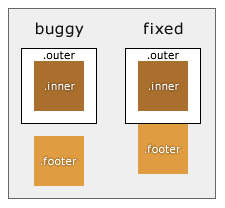
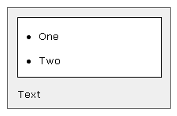

The Breakup Bug: Double margins in Opera 7.11
Introduction
It’s a sad day. Finding a bug in your favourite browser, Opera. But, on the other hand, I did run into IE and Mozilla bugs on the quest for a fix, so Opera is not alone. It looks like this bug currently only affects Opera 7.1 and 7.11, the last two versions, and will probably be fixed by 7.12, but anyway: On to the bugs!
The Bug
Opera 7.11 Screen Shot
Live Demonstration
Take a look at the box on the left called "Opera 7.11 Screen Shot". You can see two different demonstrations: the one on the left, which is buggy in Opera, has a gap between .outer (white with a black border) and .footer (light brown). The second, on the right, is exactly the same, except with no gap. (Go to final Fix) Below that is an HTML version, showing you how your browser renders the same code.
Relevant CSS:
.inner {
margin: 12px;
}
.outer {
padding: 0px;
border: 1px solid #000;
}
Relevant HTML:
<div class="outer"> <div class="inner"></div> </div> <div class="footer"></div>
You should notice that the gap between .footer and .outer in Opera is the same as the margin between .inner and .outer. It turns out that the separation between .footer and .outer is the largest of these values: the margin-top of .footer, the margin-bottom of .outer and the margin-bottom of .inner.
This bug only occurs if .outer has a border-bottom, so naturally removing that will "fix" the problem. A second solution is to replace the margin with the more reliable property: padding. See the first fix for an example.
.inner represents the last "position: relative" child of .outer, previous children, absolute or relative, have no effect. Using this knowledge, we get fix number two. We can add a last child.
Remember here that as a logical result of the above, if there was a box inside .inner with a margin-bottom, it will affect the margin-bottom of .inner, which in turn will affect the margin-bottom of .outer, finally affecting the position of .footer!
This can show itself in a list for example:
Opera 7.11 Screen Shot
The Unordered List
- One
- Two
Relevant HTML:
<ul> <li>One</li> <li>Two</li> </ul> <div>Text</div>
Relevant CSS:
ul {
border: 1px solid black;
margin: 0;
padding: 0;
}
li { margin: 1em 0em 1em 2em; }
div { margin: 0; padding: 0; }
The Fix
Fix One
Our first fix is the most obvious: remove the margin causing the bug. Easily said, easily done provided you can target the last child, here: .inner.
/* old margin-bottom: 12px; */
.inner { margin-bottom: 0px; }
/* old padding-bottom: 0px; */
.outer { padding-bottom: 12px; }
Fix Two A
My first though on a fix for this bug without having to target the last child was the following code:
.outer:after {
content: ' ';
line-height: 0px;
font-size: 0px;
}
Looks good. Fully CSS, not dependant on other CSS in the web page, and: it works. In Opera. Mozilla will render as “ ”, but no problem: the line-height and font-size hide it anyway. Just, don’t resize the window. Then, Mozilla 1.1 decides to reflow the page, and effectively make the margin-bottom of .inner 0px. Oops. It might work in other versions, but, who knows anyway? It isn't reliable enough, it could have similar problems in other browsers, so taking the same general idea (add a child) we get version B.
Fix Two B
If you don’t mind polluting your HTML, you could always do this:
Relevant CSS:
.inner {
margin: 12px;
}
.outer {
padding: 0px;
border: 1px solid #000;
}
.flatrichard {
height: 0px;
margin: 0px;
padding: 0px;
}
Relevant HTML:
<div class="outer"> <div class="inner"></div> </div> <div class="flatrichard"></div> <div class="footer"></div>
Fix Three
The last fix I’m going to give you is what I like to call an embracive fix. I said that the separation between .outer and .footer was "the largest of these values: the margin-top of .footer, the margin-bottom of .outer and the margin-bottom of .inner." This means that we can simulate the bug in other browsers by adding a margin-bottom to .outer, and then remove it using a negative margin-top on .footer. The biggest benifit of this, is that we do not have to target the last child, we only have to know its margin-bottom.
So, we can standardise the display with:
.outer {
margin-bottom: 12px;
}
And then fix it in all of them with:
.footer {
margin-top: -12px;
}
This is a good fix for our list box example:
Relevant HTML:
<ul> <li>One</li> <li>One</li> </ul> <div>Text</div>
Relevant CSS:
ul {
border: 1px solid black;
margin-bottom: 1em;
padding: 0px;
}
li { margin: 1em; }
div {
margin: 0;
padding: 0;
margin-top: -1em;
}
Conclusion
This can be a bit of a ghostly bug, but it is easy to fix. This page is tested in Opera 7.11, Mozilla 1.1 and IE6 (quirks and standards modes). If you test more, have comments, want to buy me a yacht etc, feel free to email me. I’m sure you could come up with other fixes if you need them in any given situation. Good luck!
Update: The bug seems to be fixed in Opera 7.5, making this a dead bug, the best kind!
© By Douglas Livingstone. email www
last updated: July 3, 2004
created: June 26, 2003